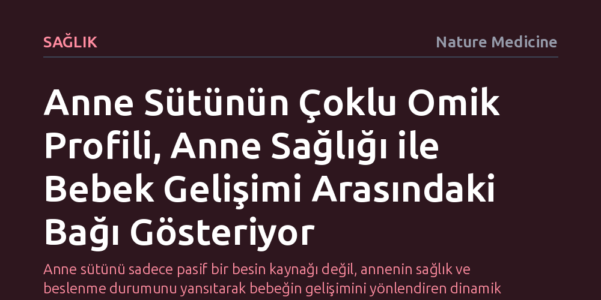

SAGLIK · Nature Medicine · 2026-10-23
Anne sütünün çoklu omik analizi, anne beslenmesinin meme bezi işlevini ve dolayısıyla bebek gelişimini doğrudan etkilediğini ortaya koyuyor. Bu yöntem, anne sağlığı ile bebeğin büyüme seyrini cerrahi müdahale olmaksızın süt üzerinden takip etmeyi sağlıyor.
Anne sütünü sadece pasif bir besin kaynağı değil, annenin sağlık ve beslenme durumunu yansıtarak bebeğin gelişimini yönlendiren dinamik ve cerrahi müdahalesiz bir biyolojik takip penceresi olarak konumlandırıyor.

Anne sütünün bebek sağlığı, bağışıklık sistemi ve erken dönem gelişimi açısından sunduğu eşsiz faydalar modern tıbbın en köklü kabulleri arasında yer alır. Buna karşın, bu hayati sıvıyı üreten meme bezinin fizyolojik süreçleri ve hücresel mekanizmaları bilim dünyasında şaşırtıcı biçimde yeterince araştırılmamış bir konu olmayı sürdürmektedir. Anne sütünün içeriğini ve kalitesini hangi biyolojik kuralların belirlediği sorusu uzun yıllar boyunca yüzeysel incelemelerle sınırlı kalmıştır.
Meme bezinin derinlemesine incelenememesinin en önemli nedenlerinden biri, bu dokudan örnek almanın biyopsi gibi invaziv ve ağrılı cerrahi prosedürler gerektirmesidir. Sağlıklı emziren annelerden bu tür cerrahi doku örnekleri toplamak etik ve pratik açılardan neredeyse imkansız olduğundan, organın işleyişi ve dış faktörlere verdiği moleküler yanıtlar büyük oranda kapalı bir kutu olarak kalmıştır.
Son yıllarda biyoloji biliminde çığır açan çoklu omik teknolojileri, bu kısıtlamayı aşmak için yenilikçi bir fırsat sundu. Araştırmacılar, anne sütünü yalnızca bir gıda olarak değerlendirmek yerine, hücresel metabolizma ve doku işleyişini ele veren zengin bir biyolojik veri kaynağı olarak incelemeye yöneldiler. Böylece sütün içindeki proteinler, metabolitler ve diğer biyoaktif bileşenler katman katman çözümlenmeye başlandı.
Elde edilen bulgular, doğrudan anne sütü bileşiminin meme bezinin hücresel işleyişini ayna gibi yansıttığını göstermektedir. Bilim insanlarının ifade ettiği gibi anne sütü, "meme bezi işlevine cerrahi olmayan bir pencere" açmaktadır. Bu sayede anneye hiçbir cerrahi müdahalede bulunmadan, yalnızca sağılan süt örnekleri üzerinden meme dokusunun fizyolojik durumu, çevresel faktörlerin dokuya etkileri ve sütün salgılanma dinamikleri güvenle izlenebilmektedir.
Sütün çoklu omik analizi, çevresel faktörlerin ve özellikle anne beslenmesinin süt bileşimini belirlemede kritik bir rol oynadığını ortaya koymaktadır. Annenin tükettiği besinler, genel sağlık durumu ve metabolik dengesi, meme bezindeki hücresel süreçleri doğrudan modüle ederek sütün moleküler mimarisini şekillendirmektedir. Bu durum, sütün sabit bir formül değil, annenin anlık fizyolojisini yansıtan dinamik bir ekosistem olduğunu göstermektedir.
Bu moleküler mimarinin en çarpıcı sonucu ise bebeğin büyüme hızı ve gelişim seyri üzerinde belirleyici olmasıdır. Anne sağlığındaki veya beslenmesindeki dalgalanmalar süt aracılığıyla bebeğe iletilmekte ve bebeğin gelişimsel gidişatını doğrudan yönlendirmektedir. Dolayısıyla bebeğin sağlıklı büyümesini desteklemek, yalnızca bebeğin doğrudan beslenmesini değil, öncelikle emziren annenin beslenme ve sağlık koşullarının en iyi seviyeye getirilmesini gerektirmektedir.
Bu alandaki önceki araştırmalar genellikle oldukça küçük örneklem boyutlarıyla yürütülmüş, bu da bulguların genel geçerliğini sınırlamıştır. Anne sütü profilleri bireyler arasında büyük doğal değişkenlik gösterdiğinden, küçük gruplarla yapılan çalışmalar mekanizmaların tam olarak anlaşılmasına yetmemiştir. Çoklu omik haritalandırmanın yaygınlaşması, daha geniş örneklem gruplarıyla bu değişkenliğin ardındaki nedensel mekanizmaları aydınlatmayı amaçlamaktadır.
Gelecekte anne sütünün moleküler takibi, hem annede gelişebilecek meme ve metabolizma sorunlarının erkenden saptanmasını sağlayabilir hem de gelişimsel risk altındaki bebekler için hedefe yönelik beslenme müdahalelerine zemin hazırlayabilir. Meme bezinin süt üzerinden cerrahisiz izlenebilmesi, anne ve bebek sağlığını birbirine bağlı tek bir biyolojik eksen olarak ele alan yeni bir koruyucu hekimlik anlayışını müjdelemektedir.